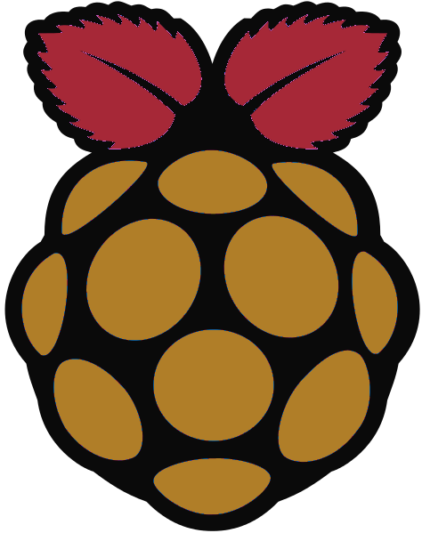
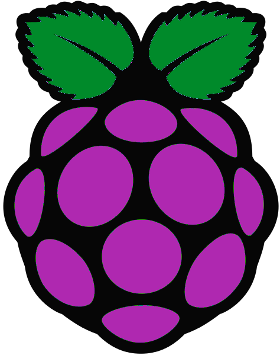
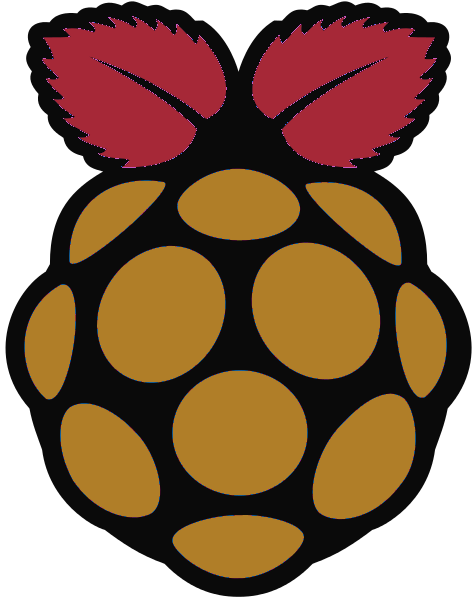
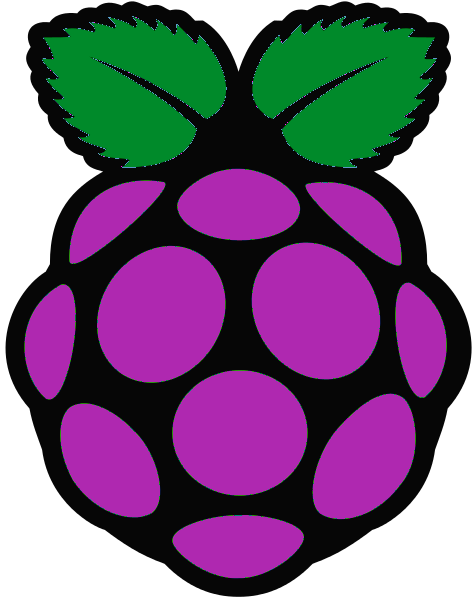

Raspberry Pi Security Camera Project
 



Εισαγωγή στο θέμα
Η εργασία αποτελείται από δύο παρόμοιες υλοποιήσεις συστήματος παρακολούθησης - κάμερας ασφαλείας, που έχουν ως βάση τον μικρο-υπολογιστή Raspberry Pi.
Σκοπός της εργασίας είναι να παρουσιάσει μία οικονομική αλλά και σύγχρονη εναλλακτική στα συστήματα παρακολούθησης, η οποία είναι ευέλικτη και προσιτή ακόμα και σε άτομα με λιγοστές γνώσεις προγραμματισμού.
Συστήματα Παρακολούθησης
Τα διαθέσιμα για αγορά συστήματα παρακολούθησης έρχονται σε πολλές μορφές και μεγάλο εύρος τιμών.
Μία απλή κάμερα ασφαλείας κοστίζει γύρω στα 70 ευρώ, αλλά δε διαθέτει λειτουργία stream πάνω από το internet, εντοπισμού κίνησης και αποθήκευσης φωτογραφιών /βίντεο.
Συστήματα που ικανοποιούν αυτές τις απαιτήσεις κοστίζουν τουλάχιστον 400 ευρώ, χωρίς να υπολογίζεται το κόστος εγκατάστασης και συντήρησης.
Οι δικές μας υλοποιήσεις
Με στόχο να δοθεί έμφαση στην ευελιξία του συστήματος σχεδιάσαμε δύο διαφορετικές υλοποιήσεις.
Υλοποίηση 1:
Χρησιμοποιήθηκε η έκδοση MMAL του Motion, η οποία είναι αρκετά "ελαφριά" στους πόρους του Raspberry και υποστηρίζει το Raspberry Pi Camera Module - το οποίο είναι μέρος της υλοποίησης 1.
Επιπλέον, για την αποστολή ειδοποιήσεων e-mail γράφτηκε ένα shell script που καλείται όταν εντοπίζεται κίνηση. Τέλος, για το ανέβασμα των φωτογραφιών χρησιμοποιήθηκε ένα shell script και η υπηρεσία dropbox.
Κόστος: 82€ = Raspberry Pi Model B (40 €) + Camera Module (30 €) + WiFi Dongle (9 €) + SD Card 4GB (3 €)
Υλοποίηση 2:
Χρησιμοποιήθηκε η βασική έκδοση του Motion, με το Motion Notify. Τα δεδομένα που καταγράφονται με τον εντοπισμό κίνησης στέλνονται σε χώρο στην υπηρεσία Google Drive.
Κόστος: 65€ = Raspberry Pi Model B (40 €) + 3MP USB Camera (20 €) + SD Card 8GB (5 €)
Αναλυτικά: Hardware

To Raspberry Pi είναι ένας υπολογιστής μεγέθους πιστωτικής κάρτας που πρωτοεμφανίστηκε στην αγορά το 2012. Εξοπλισμένο μόνο με τα απολύτως απαραίτητα κομμάτια hardware και με CPU των 700MHz, κατάφερε να σημειώσει πάνω από 5 εκατομμύρια πωλήσεις μέσα σε μόλις τρία χρόνια.
Μέχρι στιγμής έχουν κυκλοφορήσει 5 εκδόσεις του, και η έκδοση που χρησιμοποιήθηκε για την εργασία είναι η B, με τα εξής χαρακτηριστικά:
- Chip: Broadcom BCM2835 SoC
- Core architecture: ARM11
- CPU: 700 MHz Low Power ARM1176JZFS Applications Processor
- GPU: Dual Core VideoCore IV® Multimedia Co-Processor (Provides Open GL ES 2.0, hardware-accelerated OpenVG, and 1080p30 H.264 high-profile decode. Capable of 1Gpixel/s, 1.5Gtexel/s or 24GFLOPs with texture filtering and DMA infrastructure.
- Memory: 512MB SDRAM
- Operating System: Boots from Micro SD card, running a version of the Linux operating system
- Dimensions: 85 x 56 x 17mm
- Power: Micro USB socket 5V, 2A
Επιπλέον, για την καταγραφή βίντεο και τη λήψη φωτογραφιών χρησιμοποιήθηκαν: το "Raspberry Pi Camera Module" και μία USB camera. Απαραίτητη για το streaming είναι η ύπαρξη DSL σύνδεσης και ενός αντίστοιχου απλού DSL Router.
Αναλυτικά: Software

Κύριο συστατικό της εργασίας είναι το ελεύθερο και ανοιχτού κώδικα λογισμικό Motion.
To Motion είναι ένα πρόγραμμα γραμμένο σε C, που έχει τη δυνατότητα να χρησιμοποιεί συνδεδεμένες κάμερες για να εντοπίζει κίνηση και να καταγράφει βίντεο και εικόνες. Παράλληλα, διαθέτει έναν απλό webcam server που επιτρέπει την προβολή του stream μέσω του internet.
Για το σύστημα αποστολής ειδοποιήσεων χρησιμοποιήθηκαν plugins όπως το Motion Notify. Τα πρόσθετα αυτά καλούνται μέσα από το Μotion, όταν εντοπίζεται κίνηση, και μέσω scripts σε Python και γλώσσας shell (π.χ. bash), στέλνουν ειδοποίηση μέσω e-mail, στη διεύθυνση που έχει ορίσει ο χρήστης. Αξίζει να σημειωθεί ότι υπάρχει δυνατότητα να στέλνονται ειδοποιήσεις ακόμα και σε κινητή συσκευή του χρήστη (smartphone, tablet) μέσω αντίστοιχων πρόσθετων εφαρμογών
Με χρήση κατάλληλων scripts γίνεται και το uploading των στιγμιοτύπων της κίνησης στο επιθυμητό cloud storage service ή οποιοδήποτε remote storage. Το λογισμικό είναι παραμετροποιήσιμο σε μεγάλο βαθμό. Υπάρχουν δυνατότητες αλλαγής στο σύστημα εντοπισμού κίνησης, στο πότε θα στέλνονται ειδοποιήσεις, στο πότε θα στέλνονται και πότε θα διαγράφονται τα αποθηκευμένα αρχεία και σε πολλά ακόμη στοιχεία του λογισμικού.
Όσον αφορά στο δικτυακό μέρος του project, δεν χρειάζεται κάτι παραπάνω από μια απλή οικιακή σύνδεση DSL. Μόνη προϋπόθεση είναι να γίνει σωστά το port forwarding της διεύθυνσης και της θύρας όπου στέλνει το stream το Motion, και φυσικά να οριστούν τα στοιχεία (username & password) ώστε να είναι προστατευμένη η σελίδα. Για την παραμετροποίηση του port forwarding, μπορεί κανείς να κάνει μια σχετική αναζήτηση στο διαδίκτυο και να συμβουλευτεί το εγχειρίδιο χρήσης του router που διαθέτει. Δίνεται επίσης η επιλογή να χρησιμοποιηθεί κάποιο domain name για τη διευκόλυνση της πρόσβασης. Υπάρχουν οργανισμοί που διαθέτουν και δωρεάν υπηρεσίες DDNS.
Αναλυτικά: Εγκατάσταση και παραμετροποίηση
Η εγκατάσταση της βασικής έκδοσης του Motion μπορεί να γίνει και μέσω package manager και "χειροκίνητα". Για διανομές Linux όπως το Ubuntu, αρκεί η εντολή:
sudo apt-get install motion
Για να κατεβάσετε και να κάνετε build τα πακέτα, υπάρχουν πολυάριθμοι οδηγοί στο διαδίκτυο, στη σελίδα του Motion που παραθέτουμε στις πηγές καθώς και αλλού.
Το Motion-MMAL εγκαθίσταται κατόπιν της εγκατάστασης του Motion. Μπορείτε να δείτε την διαδικασία στον σχετικό σύνδεσμο στις πηγές.
Το Motion δεν έχει γραφικό περιβάλλον (GUI). Επομένως όλα γίνονται μέσω εντολών στο terminal που παρέχει το λειτουργικό σύστημα.
Για την παραμετροποίηση, υπάρχει ένα αρχείο config (συγκεκριμένα motion.conf) όπου μπορούμε να ορίσουμε όλες τις μεταβλητές που χρησιμοποιεί το λογισμικό.
Υπάρχουν μερικές επιλογές παραμετροποίησης που χρησιμοποιούνται μόνο αν το Motion γίνει build σε ένα σύστημα με τις αντίστοιχες software libraries εγκατεστημένες (MySQL, PostgreSQL and FFMPEG).
Εμείς στις υλοποιήσεις μας χρησιμοποιούμε τις libraries του FFMPEG (libavcodec). Ορισμένα παραδείγματα παραμέτρων είναι οι:
ffmpeg_cap_new, ffmpeg_cap_motion, ffmpeg_filename, ffmpeg_bps, ffmpeg_variable_bitrate, ffmpeg_video_codec
Μερικές ενδεικτικές παράμετροι που μας απασχόλησαν κατά τις δοκιμές είναι οι εξής:
- daemon: ενεργοποίηση/απενεργοποίηση του daemon (background) mode
- framerate: μέγιστος ρυθμός FPS που καταγράφει η κάμερα
- gap: διάστημα κατόπιν της τελευταίας καταγραφής κίνησης (σε seconds) για το οποίο απενεργοποιείται το motion detection
- height, width: διαστάσεις εικόνας που καταγράφει η κάμερα
- threshold: κάτω όριο (σε αριθμό pixels που άλλαξαν) για τον εντοπισμό κίνησης
- webcam_port: δικτυακή θύρα στην οποία θα εκπέμπεται το stream, η διεύθυνση IP είναι αυτή που έχει ανατεθεί στον υπολογιστή όπου τρέχει το Motion
Η καταγραφή σφαλμάτων έχει υλοποιηθεί στο Motion έτσι ώστε τα σφάλματα κατά το daemon (background) mode να περνάνε στο syslog. Το syslog βρίσκεται, στα περισσότερα συστήματα Linux, στο αρχείο /var/log/messages, στο /var/log/syslog ή στο /var/log/user.log.
Όσον αφορά στην παραμετροποίηση του DSL router, αυτή εξαρτάται από το μοντέλο της συσκευής. Γενικά θα πρέπει να ελεγχθούν διάφορες ρυθμίσεις ασφαλείας που μπορεί να επηρεάσουν το stream (Built-In Firewall, ISP protection tools, port range blocks, κλπ.). Για την μετάδοση του stream προτείνεται να χρησιμοποιηθεί κάποια θύρα από την 9000 και άνω, που να μη χρησιμοποιείται από κάποια γνωστή υπηρεσία ή πρωτόκολλο δικτύου. Επίσης είναι απαραίτητο η θύρα αυτή να ρυθμιστεί ώστε να γίνει το forwarding της από το router. Αν χρησιμοποιηθεί κάποια υπηρεσία DDNS, είναι πιθανό να πρέπει να ρυθμιστεί και το router ανάλογα. Το Raspberry Pi μπορεί να συνδεθεί ενσύρματα (καλώδιο Ethernet) ή ασύρματα (WiFi adapter/Dongle) με το router.
Σύγκριση και συμπεράσματα
Όπως αναφέρεται και στην παρουσίαση, μια εγκατάσταση CCTV με συστήματα ασφαλείας που κυκλοφορούν στο εμπόριο, μπορεί να κοστίσει από 300 μέχρι και πάνω από 4000 ευρώ. Τέτοια συστήματα χρειάζεται, στην πλειοψηφία τους, να εγκατασταθούν από κάποιο τεχνικό που έχει γνώσεις και εμπειρία στον τομέα. Επίσης μπορεί να μην είναι και εύκολα παραμετροποιήσιμα από τον τελικό χρήστη. Άλλο ένα θέμα που τίθεται είναι ότι τέτοια συστήματα μπορεί κανείς να τα πάρει ως χρησιδάνειο από μια εταιρεία security η οποία θα ανιχνεύει και τον συναγερμό του σπιτιού. Επομένως οι εικόνες του σπιτιού περνάνε και στα "χέρια" τρίτων προσώπων.
Με την χρήση του συστήματος που προτείνουμε με βάση το Raspberry Pi, όλα τα παραπάνω προβλήματα αντιμετωπίζονται. Είναι μια κλιμακώσιμη λύση καθώς ο χρήστης μπορεί να ξοδέψει από λίγα μέχρι χιλιάδες ευρώ κατά βούληση. Αυτό εναπόκειται μόνο στο πόσο προηγμένο και θωρακισμένο επιθυμεί να είναι το σύστημα. Μπορεί να έχει από 1 έως πολλά Raspberry Pi στον χώρο με μία ή πολλές κάμερες (χαμηλής ή υψηλής ευκρίνειας). Μπορεί να ενσωματώσει τις κάμερες σε κουτιά ασφαλείας ή σε τοίχους. Μπορεί να προστατέψει τα μέσα αποθήκευσης των στιγμιοτύπων κίνησης όπως επιθυμεί. Σε φυσικό επίπεδο αλλά και ως προς το λογισμικό. Για όλα αυτά μπορεί κανείς να βρει άφθονο υλικό στο διαδίκτυο. Αντίθετα με μια συμβατική κάμερα ασφαλείας όπου πιθανότατα η μόνη πηγή υποστήριξης θα είναι το εγχειρίδιο χρήσης.
Εν κατακλείδι, στην εποχή μας είναι πλέον σχετικά εύκολο να εγκαταστήσει κάποιος, ακόμα και με βασικές γνώσεις Η/Υ και δικτύων, ένα σύστημα CCTV στο σπίτι ή την εργασία του. Οι επιλογές είναι πολλές καθώς αντί για το Raspberry Pi θα μπορούσε να χρησιμοποιηθεί οποιοσδήποτε υπολογιστής ή μικρο-υπολογιστής. Η επιλογή της κάμερας και του τρόπου εγκατάστασης εναπόκειται στον χρήστη και το κόστος είναι ανάλογο των αναγκών του. Με μια βασική σύνδεση DSL μπορεί επίσης να μεταδώσει σε πραγματικό χρόνο τις εικόνες από τις κάμερες σε ένα προστατευμένο (κατά το δυνατόν) stream.